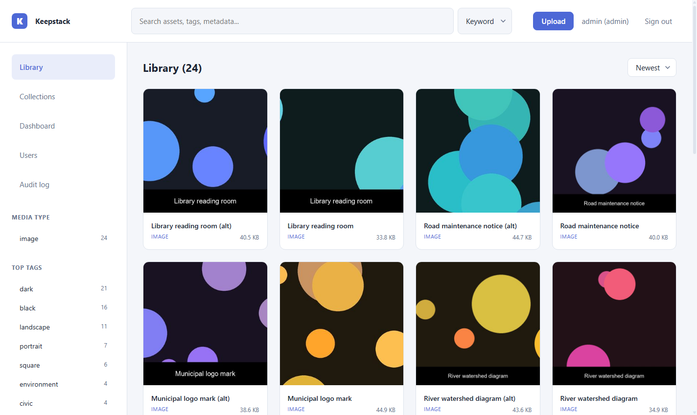
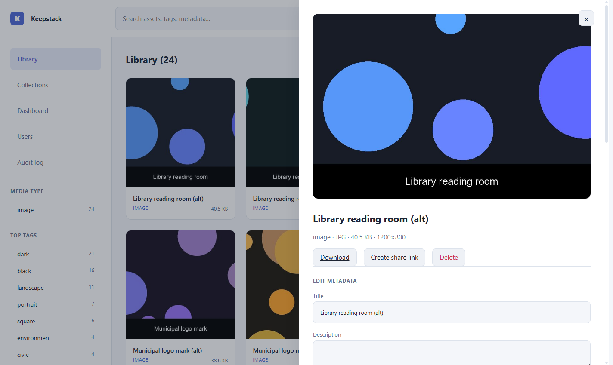
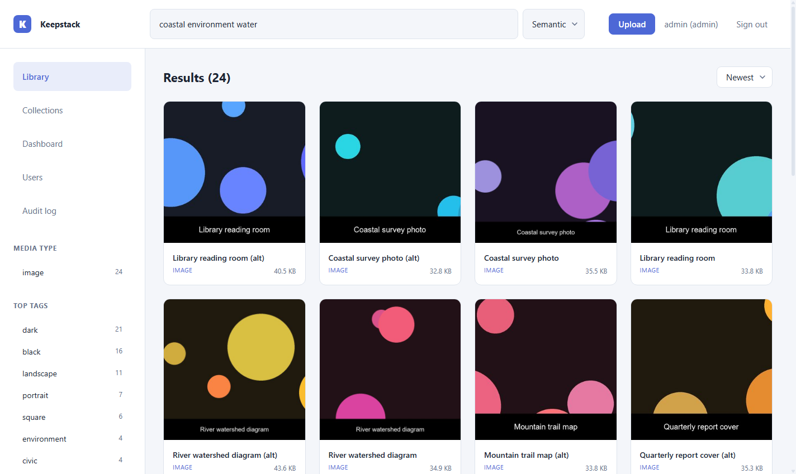
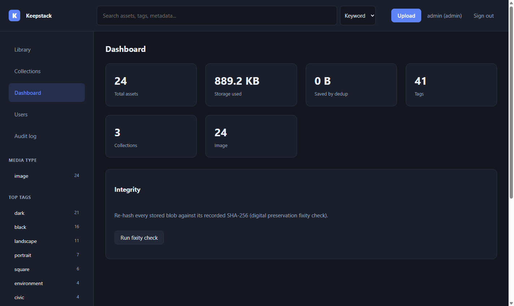
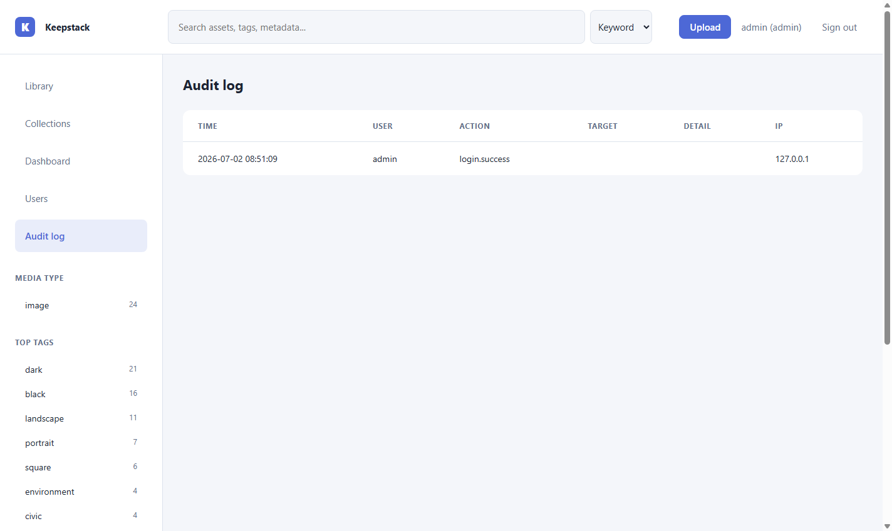

A free, self-hostable digital asset management system that combines archival-grade metadata standards with modern local AI and a clean interface. The two things the market keeps separate, in one tool, installable in one command.

A survey of the twenty systems that matter most for government, archival, and institutional buyers found a market split into two camps that never met. The full, citation-backed study is in RESEARCH.md.
ResourceSpace, DSpace, Archivematica, Preservica, Axiell. Run national archives, libraries, and museums.
Immich, PhotoPrism, and the commercial Bynder and Adobe. Great tagging and UX.
Keepstack next to seven leading systems across 21 capabilities. Keepstack was graded against its own source code, competitors against the research, then audited for overclaiming. It deliberately shows where Keepstack is only partial or still on the roadmap. Full detail in COMPARISON.md.
One Python process, one SQLite database, one blob directory, four runtime dependencies. Full detail and more diagrams in ARCHITECTURE.md.
flowchart LR UI["Web client
(zero-build SPA)"] -->|HTTP| API["REST API"] API --> ING["Ingest"] & SRCH["Search"] & STD["Standards
DC / OAI-PMH / IIIF"] & AUTH["Auth + audit"] ING --> AI["AI (optional)"] ING --> DB[("SQLite + FTS5")] & BLOB[["Content-addressable
blob store"]] SRCH --> DB API --> BLOB
sequenceDiagram
participant U as Client
participant I as Ingest
participant S as Storage
participant DB as SQLite
U->>I: upload file
I->>S: hash + store (SHA-256)
alt identical content exists
S-->>I: reuse blob (deduped)
else new content
I->>DB: metadata + thumbnail + tags
I->>DB: FTS index + embedding
end
I-->>U: asset ready
Real captures of the app, not mockups.




Everything is one click deep, nothing is dumped at once.